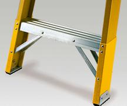
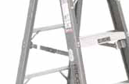
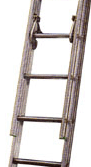

Ladder Safety

The OSHA
Standard for portable ladders contains specific requirements designed
to ensure worker safety:
|
Loads
- Self-supporting (foldout) and non-self-supporting (leaning) portable
ladders must be able to support at least four times the maximum intended
load, except extra-heavy-duty metal or plastic ladders, which must be able
to sustain 3.3 times the maximum intended load. (See Figure 1.)
|
Figure 1
Figure 2

Figure 3

Figure 4

Figure 5
|
|
Angle
- Non-self-supporting ladders, which must lean against a wall or other
support, are to be positioned at such an angle that the horizontal
distance from the top support to the foot of the ladder is about 1/4 the working length of the
ladder. (See Figure 2.)
- In the case of job-made wooden ladders, that angle should equal about
1/8 the working length. This minimizes the strain of the load on
ladder joints that may not be as strong as on commercially manufactured
ladders.
|
|
Rungs
- Ladder rungs, cleats, or steps must be parallel, level, and uniformly
spaced when the ladder is in position for use. Rungs must be spaced
between 10 and 14 inches apart.
- For extension trestle ladders, the spacing must be 8-18
inches for the
base, and 6-12 inches on the extension section.
- Rungs must be so shaped that an employee's foot cannot slide off, and
must be skid-resistant. (See Figure 3.)
|
|
Slipping
- Ladders are to be kept free of oil, grease, wet paint, and other
slipping hazards.
- Wood ladders must not be coated with any opaque covering, except
identification or warning labels on one face only of a side rail.
|
|
Other
Requirements
- Foldout or stepladders must have a metal spreader or locking device to
hold the front and back sections in an open position when in use. (See
Figure 4.)
- When two or more ladders are used to reach a work area, they must be
offset with a landing or platform between the ladders.
- The area around the top and bottom of ladder must be kept clear.
- Ladders
must not be tied or fastened together to provide longer sections,
unless they are specifically designed for such use. (See Figure 5.)
- Never use a ladder for any purpose other than the one for which it was
designed.
|
|